Job 18.6 screens — lock screen text and layout
Every overlay image below is the real LockForm paint path used by the
Windows Helper (the same OnPaint, buttons, scene and blurred shadow), captured through
--lock-preview --capture at the stated physical size and forced UI scale. The HTML
reference was rendered in Chromium at the same size with the bundled Fredoka/Nunito static faces and
the real lockup-ondark asset.
Reference vs real overlay at 100%
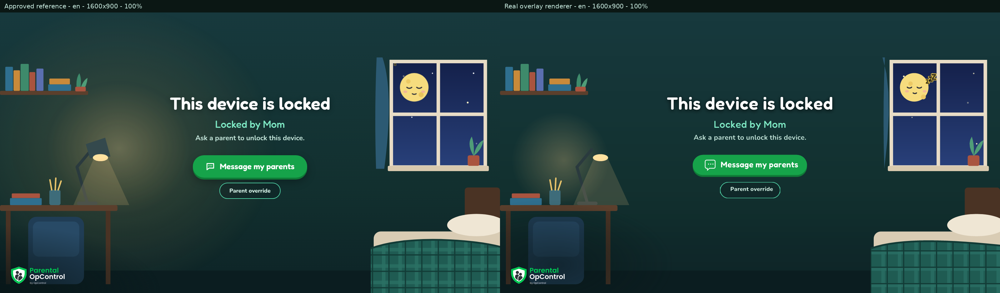
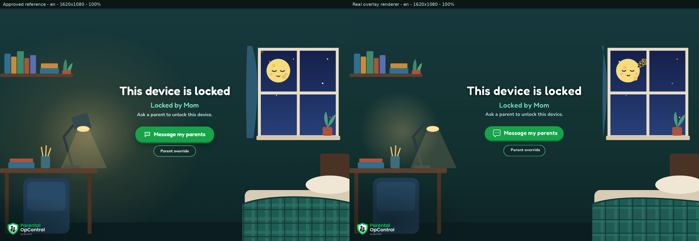
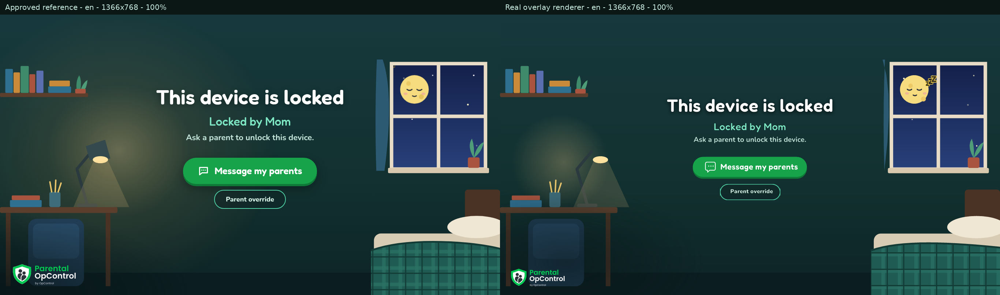
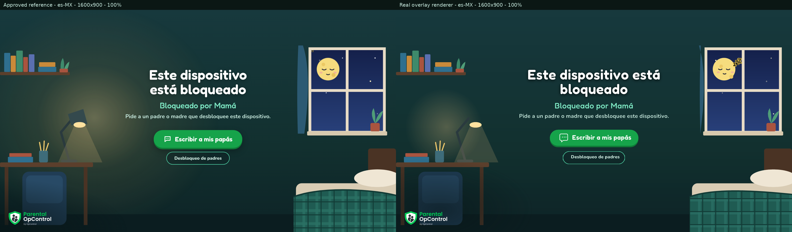
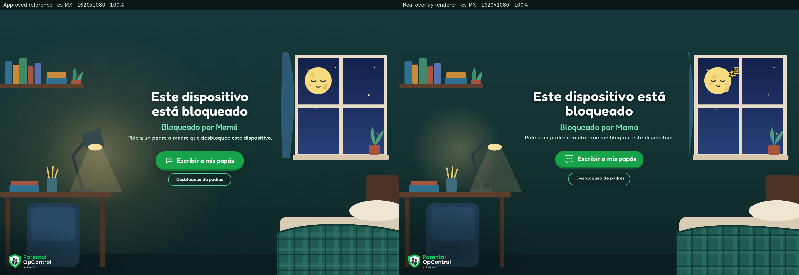
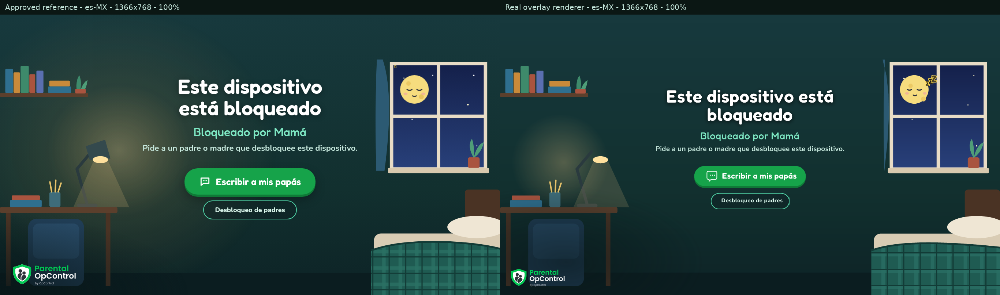
Scaling matrix — real overlay at 100 / 125 / 150 / 200%
These are physical-pixel renders. The lock block scales with the design height (capped
at 900 design px) and the monitor scale, so the same layout is centred and clear at every setting.
The runtime check in each capture asserted every line/button centre within 1 px of the screen centre
and no overlap (issues=0 in all 24 runs).
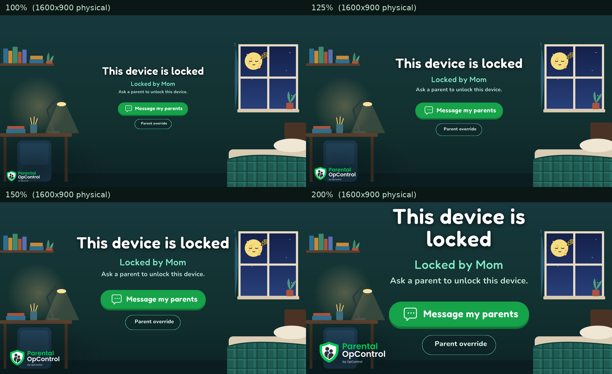
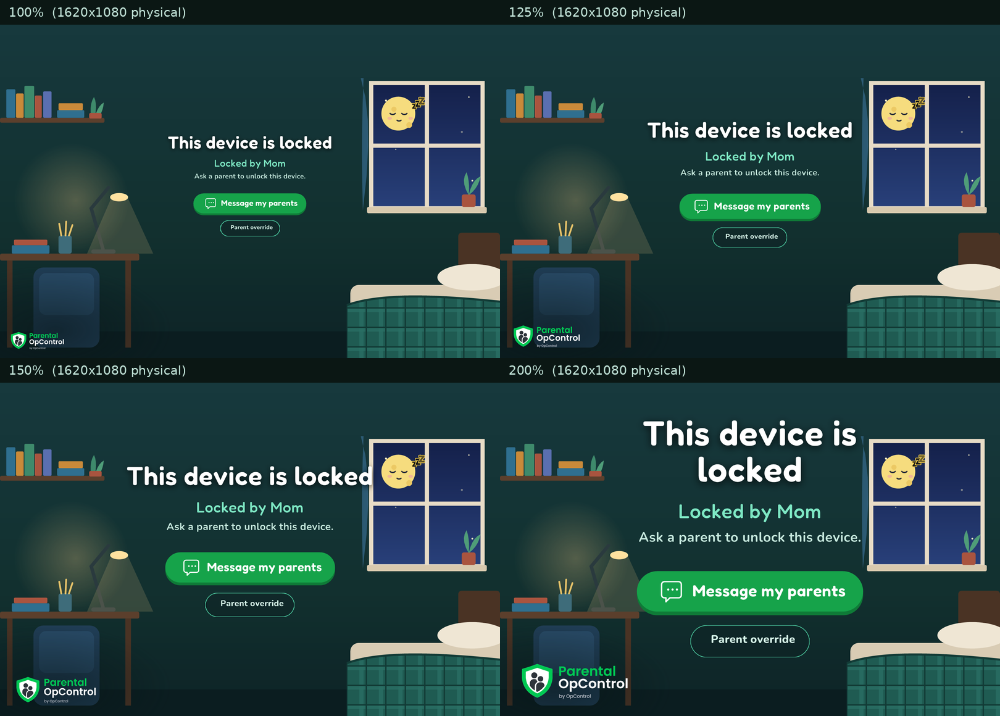
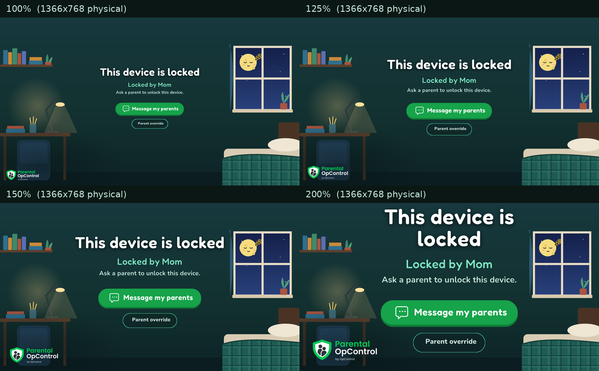
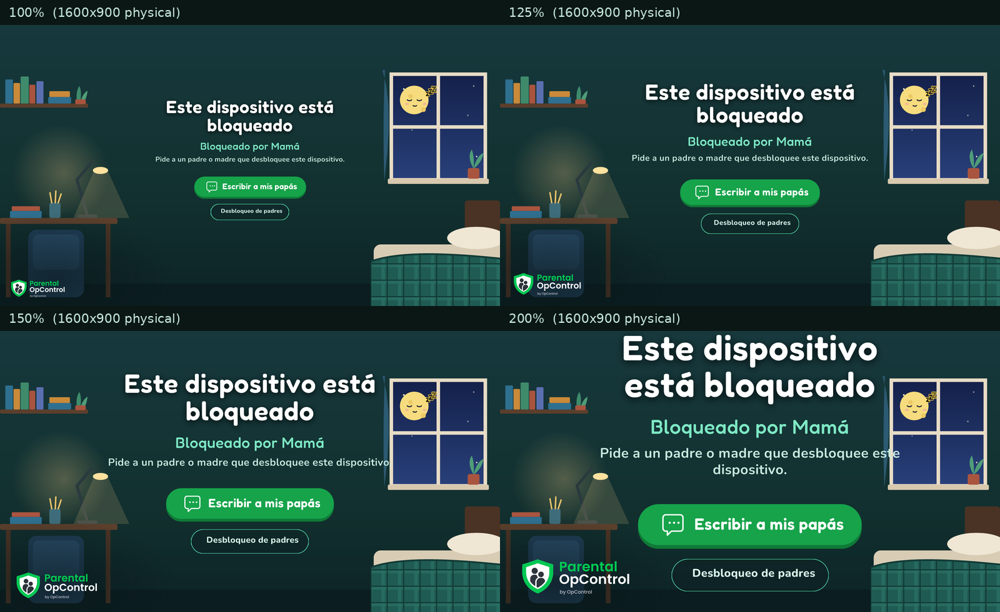
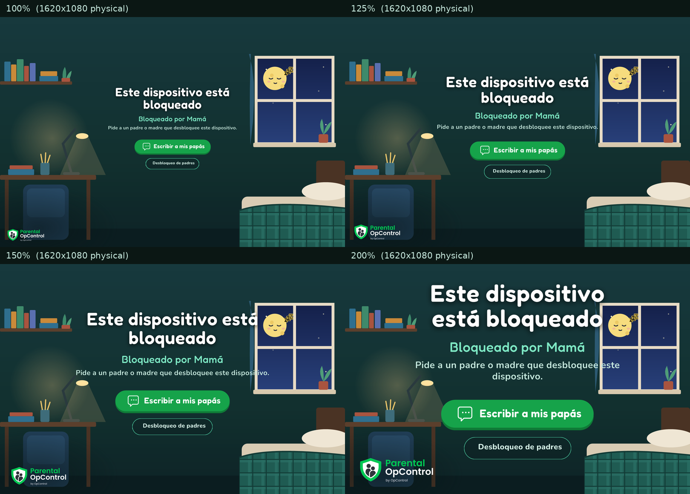
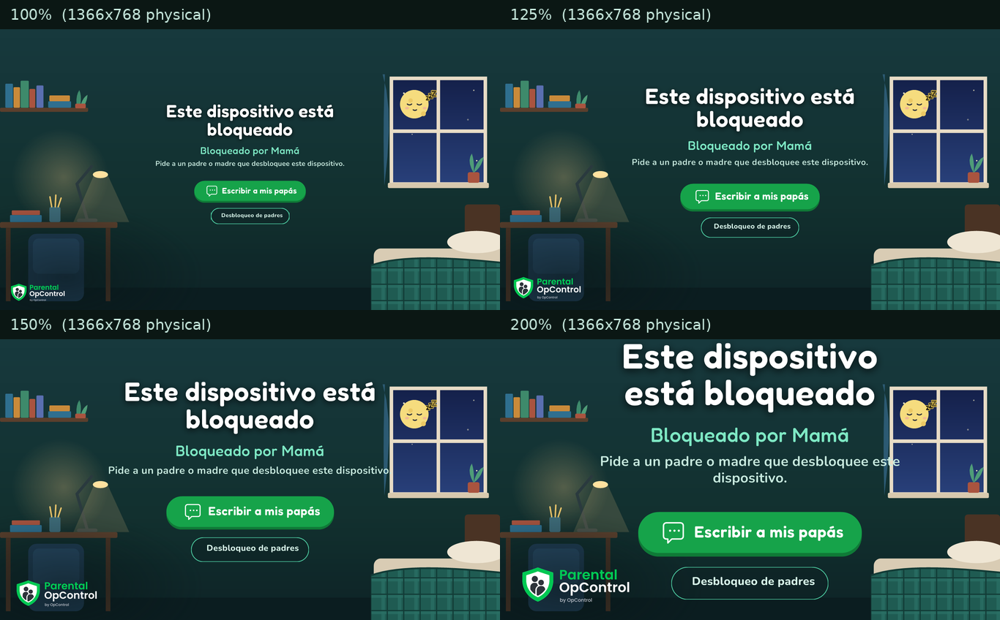
Remaining differences from the reference
- The scene (lamp arm/shade, curtain, chair, plaid blanket) is the existing GDI+ approximation from Job 18.5; this job changed only the text block, buttons and shadow.
- The static Fredoka/Nunito faces are a pixel or two wider than the web-font instances, so line lengths differ slightly (never clipped; the draw band is full-screen and centred).
- At 1366×768 the design scale is 0.853 (screen height / 900), so the block is proportionally smaller than the fixed-px HTML reference at that size; this is the intended “sizes scale with screen height” behaviour.
- At 200% on 1366×768 the block is large and the Spanish hint wraps to two lines; it stays on screen and no element overlaps.